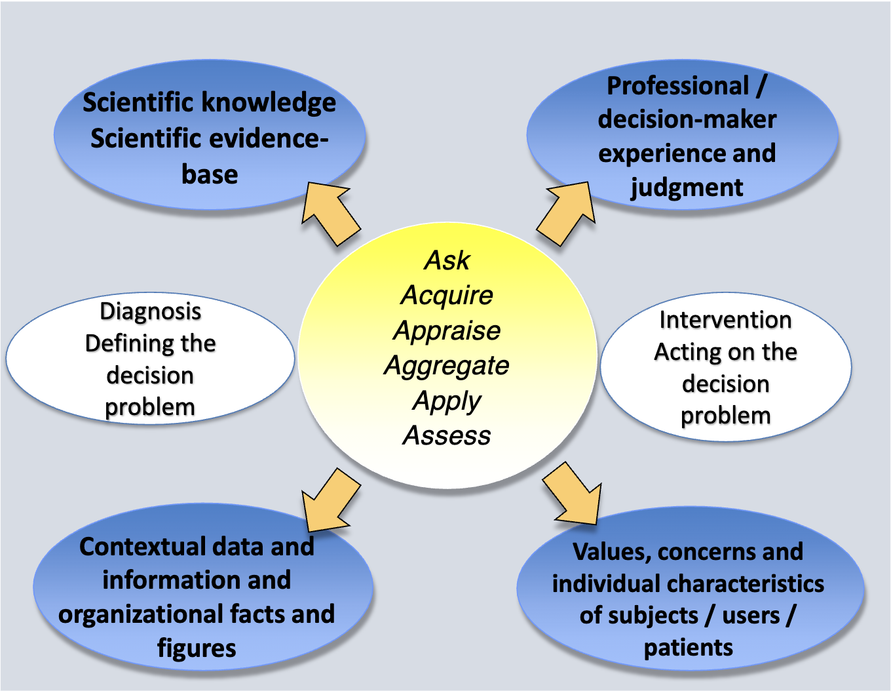

Flash Summary#
Decision-making, Decision Sciences and Evidence-Based Decision-Making#
Prospect Theory - Losses and gains are valued differently
Certainty (of gain and of loss)
Isolation effect - people focus on differences between options rather than similarities
Loss aversion
Heuristics and cognitive biases in decision making
Availability: Judgments distorted by easily recalled events
Selective perception: Expectations bias observations
Illusory correlation: Encourages belief that unrelated variables are correlated
Conservatism: Ignoring full effect of new information
Law of small numbers: Overestimating representativeness of small groups
Regression bias: Failure to allow for regression to the mean
Wishful thinking: Probability of desired events judged too highly
Illusion of control: Overestimating personal control over outcomes
Logical reconstruction: “Logical” reconstruction of inaccurately recalled events
Hindsight bias: Overestimation of predictability of past events
Antidotes:
Use frameworks for strategic analysis
Use multiple perspectives
Devil’s advocate
Consider improbable or unpopular assumptions
Re-evaluate over time
Decision Models:
Modelos Normativos
Árvores de Decisão
Diagramas de Influência
Redes Bayesianas/Belief
(Markov Chains)
Modelos Descritivos
Falácias e viéses
Prospect Theory
Características de um Sistema de Saúde de qualidade (10):
Care is based continuous healing relationships
Care is custumized according to patient needs and values
The patient is the source of control
Knowledge is shared and informations flows freely
Decision Making is evidence-based
Safety is a system property
Transparency is necessary
Needs are antecipated
Waste is continuously decreased
Cooperation among clinicians is a priority
What is EBM?
“Evidence Based Medicine is the conscientious, explicit and judicious use of current best evidence in making decisions about the care of individual patients”
“Evidence-based medicine is the integration of best research evidence with clinical expertise and patient values”

6 passos para Decisões Baseadas em Evidência:
Ask
Acquire
Appraise (relevance; impact; validity; applicability)
Aggregate
Apply
Assess
What is Personalized Medicine / Precision Medicine?
Personalized medicine is defined as a model for medicine that is customized based on the individual patient’scharacteristics (genetic, biological, physical, clinical, psychological, social, economic, etc.). All aspects of care can be personalized including medical decisions, treatments, practices, products or services used.
Technology and health technology#
Technology: É uma aplicação prática do conhecimento científico utilizado para resolver um problema
Características fundamentais:
Natureza física
Propósito
Estado de Difusão
Motivos pelos quais a tecnologia é cada vez mais importante:
Avanços na ciência
Propriedade intelectual
Populações envelhecidas
Maior prevalência de doenças crónicas
Novas doenças
Diferenças nos financiamentos e estruturas de gestão
Incentivos financeiros
Exigência pública
Uso off-label
Testes desnecessários
Treino clínico de especialidade
Competição
Evitar de má prática clínica
Economias em crescimento
5 fases do processo de decisão de inovação:
Conhecimento
Persuasão
Decisão
Implementação
Confirmação
O que é Health Technology Assessment? É um campo multidisciplinar e transdisciplinar de avaliação da investgação científica que avalia, explora e reporta as propriedades, características, consequências e impactos das tecnologias de saúde, com o objetivo de dar suporte aos processos de decisão em saúde e medicina a todos os níveis, desde os doentes a politicas de saúde nacionais.
Tipos:
Orientadas a tecnologia
Orientadas a problema
Orientadas a projeto
Que métodos utiliza?
Métodos baseados em dados primários: envolvem a recolha de dados originais
Estudos experimentais
Estudos quasi-experimentais
Estudos observacionais
Métodos de síntese de evidência -Revisões sistemáticas
Meta-analises
Modelação (árvores de decisão, modelos de estado-transição)
Desenvolvimentos de consensus
Revisões da literatura não estruturadas
Opinião de peritos
Métodos de Análise de Decisão e Modelação
Métodos de Avaliação Económica
Parciais - Análise de custos
Completos:
Cost-minimization
Cost-benefit
Cost effectiveness
Cost-Utility
Métodos de Desenvolvimento de Consenso
Análise ética
Casuistry
Coherence Analysis
Principlism
Interactive, participatory HTA approaches
Social shaping of technology
Wide reflective equilibrium
Assessment of Efficacy and Effectiveness of Healthcare Interventions#
Tipos de randomização:
Randomização completa
Randomização por blocos permutados
Randomização cross-over
Randomização estratificada (blocked)
Desenho fatorial
Randomização por clusters
Análise de acordo com intenção de tratar
Objetivo: identificar o melhor tratamento para a prática clínica
Análise por protocolo
Objetivo: compreender a eficácia da intervenção
Medidas de efeito/associação
Medidas Absolutas:
ARR
NNT
Medidas Relativas:
RR
RRR
OR
RRR = ARR/REC
Real-world data studies#
Pragmatic versus Explanatory Schwartz and Lellouch1 proposed a distinction between explanatory trials, which confirm a physiological or clinical hypothesis, and pragmatic trials, which inform a clinical or policy decision by providing evidence for adoption of the intervention into real-world clinical practice.
Assessing the nature of the trial based on a pragmatic-explanatory continuum - items:
Critérios de eligibilidade
Flexibilidade da intervenção experimental
Expertise do praticante da intervenção experimental
Intervenção comparativa
Expertise do praticante da intervenção comparativa
Intensidade do follow-up
Outcome primário
Compliance dos participantes em relação à intervenção
Adesão do praticante ao protocolo de estudo
Análise do outcome primário
Methods in Evidence Synthesis#
Métodos de Síntese de evidência
Revisões sistemáticas da literatura
Revisões não sistemáticas da literatura (ex: revisões narrativas)
Meta-análises
Métodos de consenso
Análise de decisão, modelação e métodos de simulação
Fases de síntese de evidência
Background
Definição da pergunta de investigação
Pesquisa e seleção de estudos primários
Extração e processamento de dados
Avaliação de qualidade
Análise de dados, heterogeneidade e viéses de publicação
Protocolo e disseminação de resultados
Limitações das revisões sistemáticas
Dados secundários
Dados agrupados
Qualidade dos estudos heterogénea
Nem sempre é possível/desejável fazer agregação da informação
Os métodos para agregação dos dados ainda estão em desenvolvimento
Fases e tarefas para conduzir uma revisão sistemática
Definição de uma pergunta de investigação
Definição de critérios de seleção
Definição de uma estratégia de pesquisa
Seleção de estudos
Avaliação da qualidade dos estudos
Extração de dados
Análise e processamento dos dados
Disseminação dos resultados
Tipos de métodos de pesquisa
Bases de dados bibliográficas: MEDLINE; EMBASE; CENTRAL
Pesquisa manual: revistas relevantes; livros de conferências
Referências incluídas noutros estudos
Outras revisões sistemáticas
Contactar especialistas
Bases de dados de recrutamento ou ensaios ativos ou de ensaios completos
Métodos para explorar as diferenças obtidas em diferentes estudos
Análise descrtiva/gráfica
Análise de subgrupos
Meta-análise cumulativa
Pooled analysis (índice de qualidade?)
Análise de sensibilidade
Meta-regressão
Tipos de Medidas de Efeito
Variáveis contínuas:
Diferença de média
Standardized Mean Difference
Variáveis Binárias
Proporções - Prevalência; Incidência cumulativa
Taxas - Taxa de incidência
Diferença de riscos - Redução de risco absoluta
Risco relativo
Odds ratio
Outras
Coeficiente de correlação
Hazard ratio
NNT
Modelo de efeitos fixos
Modelo de efeitos aleatórios
Avaliação de Heterogeneidade
Recomendações:
Avaliar a magnitude
Identificar causas
Explorar causas
Adaptar os métodos de análise
Fontes:
Clínica
Metodológica
Avaliação:
Estatística Q de Cochran (teste chi-quadrado)
I2
Forest plot
Análise de subgrupos
Análise de sensibilidade
Viéses de reporte
Tipos:
Viés de publicação
Time lag
Duplicate publication
Location bias
Citation bias
Language bias
Outcome reporting
Economic Evaluation of Healthcare Technologies#
An Economic Evaluation is an explicit, formal, systematic and quantitative approach used in the comparative analysis of alternative courses of action in terms of both their costsand consequences in order to support policy decisions regarding allocation and distribution of the scarce resources available, and the analysis of its determinants and outcomes.
Decisão a questão de estudo:
Qual o problem?
Quais as opções?
Qual a audiência?
Qual a perspectiva?
Qual o horizonte temporal?
Qual o tipo de estudo?
Avaliação de custos:
Identificação
Medição
Valorização
Cálculo
Avaliação de efeitos de saúde:
Identificação
ACER: rácio entre a estimativa média dos custos médios ou esperados para uma alternativa e a sua efetividade média ou esperada
ICER: é de uma dada alternativa em relação a um comparador.
Budget Impact Analysis: addresses the financial consequences and expected changes in the expenditure of a healthcare system after the adoption and diffusion of a NEW healthcare technology given budget constraints